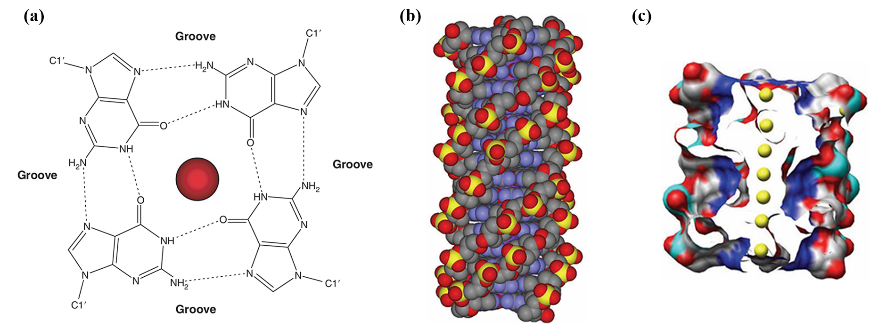
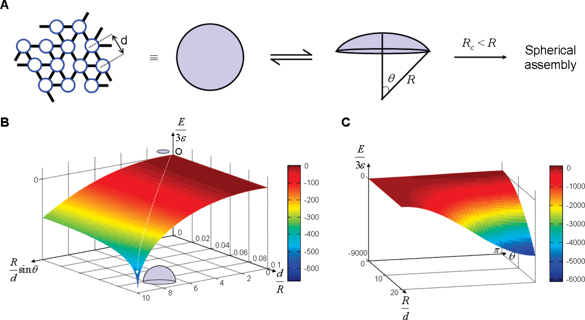

We have designed a biological supramolecular assembly material that uses tetrahedral DNA nanostructures (TDNs) as structural units and G-quadruplexes as linkers. This material can self-assemble into 2D DNA membranes without a matrix and can also spontaneously curl into 3D vesicles under the regulation of ion concentration and other factors, as shown in Fig. 1. Moreover, the inherent properties of TDNs and G-quadruplexes endow this material with a series of advantages, such as excellent biocompatibility, extensive modifiability, and sensitive ion responsiveness.

The sequence of a G-quadruplex is typically represented as GₘXₙGₘXₒGₘXₚGₘ, where m denotes the number of G residues in each short G-tract (these G residues are usually directly involved in G-tetrad interactions). Xₙ, Xₒ, and Xₚ can be any combination of residues (including G), forming the loops of the G-quadruplex(Fig. 3). G-quadruplexes can be formed not only by a single DNA strand but also by two DNA sequences each containing the GₘXₙGₘ motif [1].

In our design, two TDN monomers are linked together via G-quadruplex formation under the action of lithium ions and potassium ions, using the connecting sequences attached to the monomers(Fig. 4).

The linking method using G-quadruplexes has the following characteristics:
Assembly at room temperature: At room temperature, we can mix TDN monomers with the ion solution used for assembly to form the assembled structure. This avoids the damage to the DNA structure and the drugs or enzymes loaded on the assembly material that would be caused by the high temperatures required for other assembly reactions.
Controllable opening and closing: G-quadruplexes form and TDN monomers connect to each other under the action of metal cations such as potassium ions. When we add crown ether compounds, monovalent metal cations bind to crown ethers, leading to the disassembly of G-quadruplexes [2–4] (Fig. 5). This property allows us to adjust the functions of the assembled nanostructures more conveniently and flexibly.

G-quadruplexes formed by the coordination of different metal cations with G-rich sequences vary[5]. Due to its appropriate radius and low dehydration enthalpy, potassium ions can be embedded between two G-quartet layers in the G-quadruplex. They coordinate maximally with oxygen atoms on a total of eight G bases (four from each of the upper and lower G-quartets), neutralizing the negative charges in the G-quadruplex more effectively. This results in the formation of the most compact and strongest G-quadruplex with high binding energy. In contrast, lithium ions have a smaller radius and exhibit weaker stabilizing effects on G-quadruplexes. The G-quadruplex segments involved in assembly are relatively loose, with lower strength and smaller binding energy.
In our design, we can control the formation of two types of G-quadruplexes with different binding energies and rigidities by adjusting the types and concentrations of ions during assembly. This allows us to regulate the critical radius at which the assembly bends during formation, thereby controllably generating 2D membranes and spherical cage structures. During the 2D assembly process, the assembly first forms 2D patch structures. As monomers connect to each other, the radius of the patches continues to increase. Once the critical radius is reached, the reduction in surface energy from further 2D assembly becomes smaller than the increase in edge energy caused by incompletely assembled monomers at the edges, leading to thermodynamically spontaneous bending of the assembly(Fig. 6A). The critical radius is related to the rigidity and energy of the bonds.

Our system uses potassium and lithium ions for monomer assembly, where the binding energies stabilized by the coordination of different ions in the system have significant effects. G-quadruplexes formed with potassium ions have higher binding energy, resulting in greater edge energy at the edges during assembly. This leads to a smaller critical radius and a tendency to bend into tubular structures during assembly(Fig. 6B). In contrast, lithium ions have lower binding energy, allowing for a larger critical radius during assembly and thus maintaining the growth of 2D membrane structures(Fig. 6C). By adjusting the ratio of potassium ions to lithium ions added during assembly, we regulate the edge energy and surface energy of the assembly, enabling it to bend to a certain extent and form spherical cage structures effectively.
The building blocks of our 2D material are modified TDNs. A TDN is a framework DNA structure synthesized from four single-stranded DNAs (ssDNAs) via one-step annealing [7] (Fig. 7). Each ssDNA undergoes complementary base pairing with the other three ssDNAs, forming a tetrahedral DNA structure with high biocompatibility [7], high structural stability [7,8], high cellular uptake efficiency [9], and capacity for functional modification [10–12].

We extended the GGGGAATGGGG sequence at the 5'-end of three of the four ssDNAs(Fig. 8). After assembling into TDNs, these sequences can connect to each other under the action of monovalent metal cations(Fig. 9).


In addition, we extended a DNA sequence at the 5'-end of the fourth ssDNA of the TDN, which is used to load functional groups(Fig. 11). Through the following steps, we might be able to control the structure of our 2D supramolecular material and modularly integrate the required functions onto it:
Synthesize TDNs via one-step annealing.
Perform functional modification of TDNs by allowing the extended strand of the TDN to undergo complementary base pairing with the functional group-loaded DNA strand at room temperature.

Select the desired structures and functions, mix TDNs with different functional modifications in the required ratio, add the corresponding metal cations, and assemble to form a multifunctional integrated 2D nanomembrane or vesicle(Fig. 9,10).
(1) Burge, S.; Parkinson, G. N.; Hazel, P.; Todd, A. K.; Neidle, S. Quadruplex DNA: Sequence, Topology and Structure. Nucleic Acids Research 2006, 34 (19), 5402–5415. https://doi.org/10.1093/nar/gkl655.
(2) Dong, J.; O’Hagan, M. P.; Willner, I. Switchable and Dynamic G-Quadruplexes and Their Applications. Chem. Soc. Rev. 2022, 51 (17), 7631–7661. https://doi.org/10.1039/D2CS00317A.
(3) Zhou, Z.; Fan, D.; Wang, J.; Sohn, Y. S.; Nechushtai, R.; Willner, I. Triggered Dimerization and Trimerization of DNA Tetrahedra for Multiplexed miRNA Detection and Imaging of Cancer Cells. Small 2021, 17 (6), 2007355. https://doi.org/10.1002/smll.202007355.
(4) Wang, C.; Fadeev, M.; Vázquez‐González, M.; Willner, I. Stimuli‐Responsive Donor–Acceptor and DNA‐Crosslinked Hydrogels: Application as Shape‐Memory and Self‐Healing Materials. Adv Funct Materials 2018, 28 (35), 1803111. https://doi.org/10.1002/adfm.201803111.
(5) Largy, E.; Marchand, A.; Amrane, S.; Gabelica, V. Quadruplex Turncoats: Cation-Dependent Folding and Stability of Quadruplex-DNA Double Switches.
(6) Kim, D.; Kim, E.; Lee, J.; Hong, S.; Sung, W.; Lim, N.; Park, C. G.; Kim, K. Direct Synthesis of Polymer Nanocapsules: Self-Assembly of Polymer Hollow Spheres through Irreversible Covalent Bond Formation. J. Am. Chem. Soc. 2010, 132 (28), 9908–9919. https://doi.org/10.1021/ja1039242.
(7) Li, S.; Tian, T.; Zhang, T.; Cai, X.; Lin, Y. Advances in Biological Applications of Self-Assembled DNA Tetrahedral Nanostructures. Materials Today 2019, 24, 57–68. https://doi.org/10.1016/j.mattod.2018.08.002.
(8) Zagorovsky, K.; Chou, L. Y. T.; Chan, W. C. W. Controlling DNA–Nanoparticle Serum Interactions. Proc. Natl. Acad. Sci. U.S.A. 2016, 113 (48), 13600–13605. https://doi.org/10.1073/pnas.1610028113.
(9) Li, J.; Pei, H.; Zhu, B.; Liang, L.; Wei, M.; He, Y.; Chen, N.; Li, D.; Huang, Q.; Fan, C. Self-Assembled Multivalent DNA Nanostructures for Noninvasive Intracellular Delivery of Immunostimulatory CpG Oligonucleotides. ACS Nano 2011, 5 (11), 8783–8789. https://doi.org/10.1021/nn202774x.
(10) Tian, T.; Zhang, T.; Shi, S.; Gao, Y.; Cai, X.; Lin, Y. A Dynamic DNA Tetrahedron Framework for Active Targeting. Nat Protoc 2023, 18 (4), 1028–1055. https://doi.org/10.1038/s41596-022-00791-7.
(11) Lin, M.; Song, P.; Zhou, G.; Zuo, X.; Aldalbahi, A.; Lou, X.; Shi, J.; Fan, C. Electrochemical Detection of Nucleic Acids, Proteins, Small Molecules and Cells Using a DNA-Nanostructure-Based Universal Biosensing Platform. Nat Protoc 2016, 11 (7), 1244–1263. https://doi.org/10.1038/nprot.2016.071.
(12) Li, S.; Tian, T.; Zhang, T.; Lin, Y.; Cai, X. A Bioswitchable Delivery System for microRNA Therapeutics Based on a Tetrahedral DNA Nanostructure. Nat Protoc 2025, 20 (2), 336–362. https://doi.org/10.1038/s41596-024-01050-7.